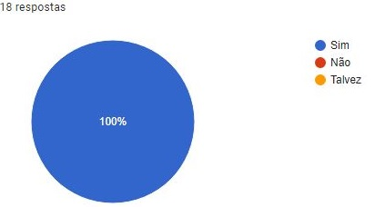
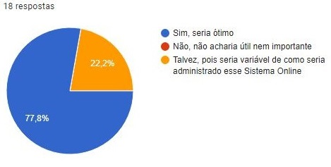
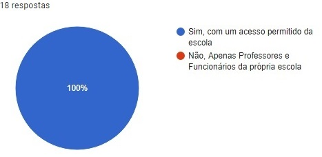

Sistema
Professora Rosana Emiko Ota Voss
Em desenvolvimento
1- Se fosse criado um Sistema Web que armazenasse dados estatísticos da ração (kg em estoque, total gasto, etc), pudesse controlar sua quantidade e com uma interface para melhor visualização do quanto há de ração, seria benéfico tanto à Escola quanto à propriedades rurais?

3- Se o Sistema Online contabilizasse com uma Interface estética e ergonômica que informasse as quantidades de rações da Escola ou de uma propriedade rural, você acharia isso útil e eficiente?

5- Você sabe aproximadamente o quanto de ração a Escola recebe do Governo?
7- De quanto em quanto tempo, você imagina que é feita a reposição das rações na Escola?
9- Você acredita que há um desperdício de ração na escola? Em qual Nível
2- Você gostaria que esse Sistema Web fosse aberto aos alunos para apenas visualização com um login e com a permissão da Escola?

4- A Escola possui algum meio de controle de estoque da ração? Seja por Excel, Banco de Dados da própria escola etc...
6- Se você fosse o Gerente de uma Empresa de Grãos, e visse um produtor rural com um Sistema Online que contabiliza dados de seus insumos, chamaria sua atenção pela ação diferenciada no Mercado?
8- Qual você acha que seria o Modelo ideal para o controle de Ração à Escola? Lembrando que é um produto alimentício.